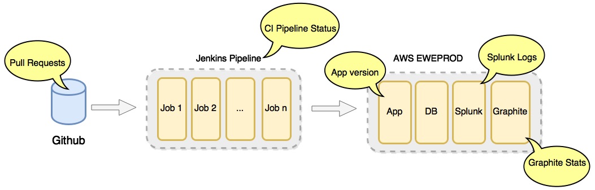

krazydash
Why need krazydash?
krazyglue team had a problem of not being able to visualize most of the app logistics neither quickly nor efficiently because they were dispersed.
Proposed solution?
Create a dashboard to streamline our awareness of the krazyglue app.
a framework to build dashboards on NodeJS
How does Atlasboard work?
General Features include...
1) Github PR's
2) Graphite/Splunk
3) CI Pipeline
4) Telegram
5) Pagerduty
A feature: Graphite
We use Graphite to track our live boxes' CPU load, server requests, and other information after the app has been deployed.
krazydash efficiently uses a cache to store aggregated data for our live boxes. It also provides the flexibility to combine graphs for a more holistic view.
A feature: CI Pipeline
Issue:
it is difficult to monitor all Jenkins jobs running in the three environments:
ewe.builds, ewe.deploy & expweb.builds
Solution:
krazydash collects real-time status of all the builds and displays them on the same page.
 Honesty
Honesty Any Questions?